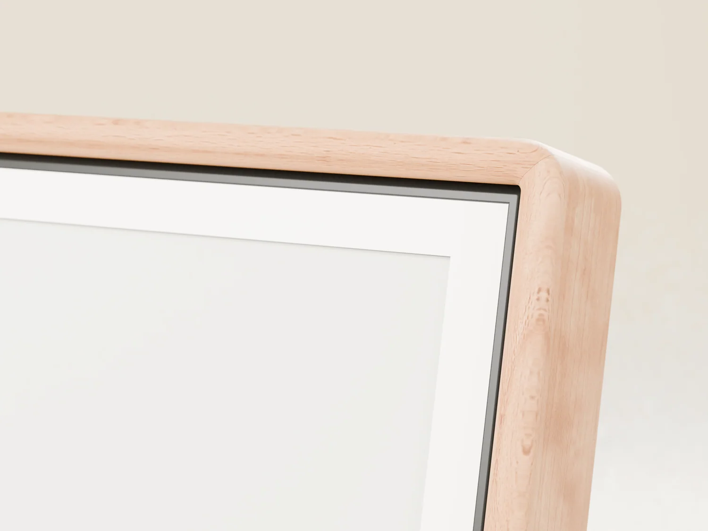
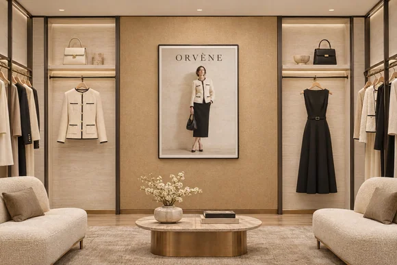
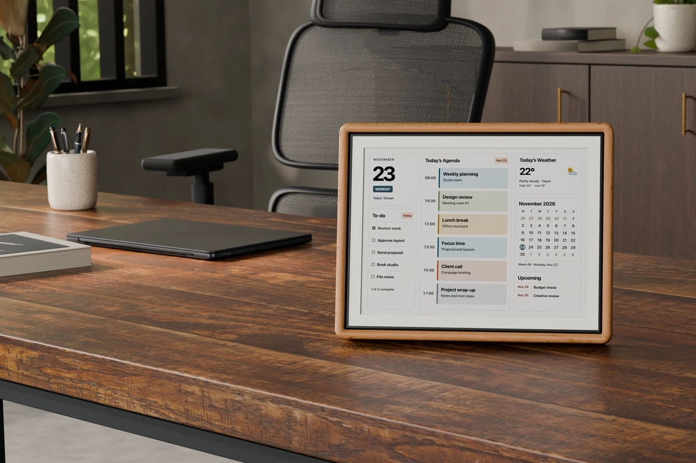

10.1″
Marco de fotos ePaper
- Resolución
- 1600 × 1200
- Refresco
- 20–35 s
- Batería*
- Aprox. 3 meses
- Peso neto
- 0.4 kg
Marcos de papel electrónico a color por Dovery
Marcos de papel electrónico a color para fotografías, obras de arte y espacios comerciales, con el tacto y la serenidad de una lámina impresa.

Colección
Cuatro tamaños diseñados al detalle: desde un marco íntimo de 10.1″ para escritorio hasta una pantalla mural inmersiva de 31.5″.



Modelo destacado
Acabado en madera noble con paspartú blanco biselado. Su soporte trasero permite apoyarlo en horizontal o vertical, y su anclaje VESA facilita colgarlo en la pared.
Áreas de visualización dibujadas a escala real.
Marco de fotos ePaper
Marco de fotos ePaper
Pantalla ePaper comercial
Pantalla ePaper comercial
*Estimaciones basadas en un refresco diario. La autonomía real varía según el uso y la configuración.

Tecnología
Seis pigmentos puros reproducen cada color bajo la luz ambiental circundante, sin brillos ni retroiluminación.
E Ink Spectra™ 6 se aprecia en todo su esplendor allí donde hay luz suficiente para contemplar un grabado.
El motor exclusivo de Dovery calibra blancos, sombras, gradientes y texturas adaptándolos a la paleta del papel electrónico.
El panel sostiene la imagen fija sin consumir energía. Únicamente la actualización y los módulos de red consumen batería.
Espacios

Hogar y vida
Envía instantáneas cotidianas y mensajes familiares directamente al marco desde la app.

Hogar y vida
Cambia las obras exhibidas sin descolgar el marco en ningún momento.

Marcas y retail
Exhibe una nueva fragancia o campaña de temporada en el mostrador.

Marcas y retail
Actualiza el lookbook con la llegada de cada nueva colección.
Inkoo App
Decide qué contemplar en tu marco desde la comodidad de tu teléfono.

La Película
 Reproducir la película
0:59
Reproducir la película
0:59